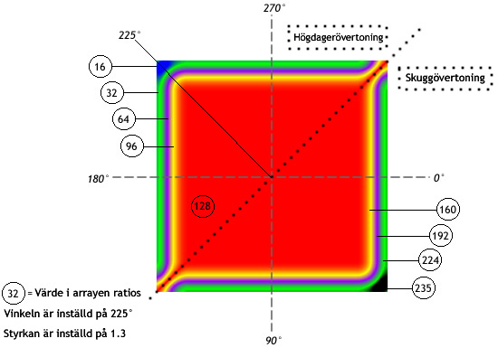

| Paket | flash.filters |
| Klass | public final class GradientBevelFilter |
| Arv | GradientBevelFilter |
| Språkversion: | ActionScript 3.0 |
| Körningsmiljöversioner: | AIR 1.0, Flash Player 9 |
Användningen av filter beror på för vilket objekt du tillämpar filtret:
- Om du vill använda filter för att visa objekt använder du egenskapen
filters. Inställningar avfilters-egenskaper i ett objekt ändrar inte objektet. Du kan ta bort filtret genom att rensa egenskapenfilters. - Om du vill använda filter på BitmapData-objekt använder du metoden
BitmapData.applyFilter(). OmapplyFilter()anropas för ett BitmapData-objekt används BitmapData-källobjektet och filterobjektet för att generera en filtrerad bild som resultat.
Om du använder ett filter för att visa ett objekt, anges cacheAsBitmap-egenskapen i visningsobjektet till true. Om du rensar alla filter återställs ursprungsvärdet cacheAsBitmap.
Det här filtret stöder skalning på scenen. Det stöder däremot inte allmän skalning, rotation och skevning. Om själva objektet skalas (om scaleX och scaleY har ett annat värde än 1.0) skalas inte filtret. Det skalas endast om användaren zoomar in på scenen.
Inget filter används om resultatbilden överskrider maxdimensionerna. I AIR 1.5 och Flash Player 10 är maxstorleken 8 191 pixlar i bredd eller höjd, och det totala antalet pixlar får inte överskrida 16 777 215 pixlar. (Om en bild är 8 191 pixlar bred kan den därför bara vara 2 048 pixlar hög.) I Flash Player 9 och tidigare och i AIR 1.1 och tidigare är begränsningen 2 880 pixlar i höjd och 2 880 pixlar i bredd. Om du till exempel zoomar in på ett stort filmklipp med ett filter, inaktiveras filtret om den resulterande bilden överskrider maxdimensionerna.
Relaterade API-element
flash.display.BitmapData.applyFilter()
BevelFilter
flash.display.DisplayObject.filters
flash.display.DisplayObject.cacheAsBitmap
 Dölj ärvda publika egenskaper
Dölj ärvda publika egenskaper Visa ärvda publika egenskaper
Visa ärvda publika egenskaper| Egenskap | Definieras med | ||
|---|---|---|---|
| alphas : Array
En array med alfagenomskinlighetsvärden för motsvarande färger i färgarrayen. | GradientBevelFilter | ||
| angle : Number
Vinkeln i grader. | GradientBevelFilter | ||
| blurX : Number
Mängden vågrät oskärpa. | GradientBevelFilter | ||
| blurY : Number
Mängden lodrät oskärpa. | GradientBevelFilter | ||
| colors : Array
En array med hexadecimala RGB-färgvärden som ska användas i övertoningen. | GradientBevelFilter | ||
 | constructor : Object
En referens till klassobjektet eller konstruktorfunktionen för en given objektinstans. | Object | |
| distance : Number
Förskjutningsavståndet. | GradientBevelFilter | ||
| knockout : Boolean
Anger om objektet har en blockeringseffekt. | GradientBevelFilter | ||
| quality : int
Hur många gånger filtret ska tillämpas. | GradientBevelFilter | ||
| ratios : Array
En array med färgfördelningsförhållanden för motsvarande färger i färgarrayen. | GradientBevelFilter | ||
| strength : Number
Styrkan hos intrycket eller spridningen. | GradientBevelFilter | ||
| type : String
Avfasningens placering. | GradientBevelFilter | ||
| Metod | Definieras med | ||
|---|---|---|---|
GradientBevelFilter(distance:Number = 4.0, angle:Number = 45, colors:Array = null, alphas:Array = null, ratios:Array = null, blurX:Number = 4.0, blurY:Number = 4.0, strength:Number = 1, quality:int = 1, type:String = "inner", knockout:Boolean = false)
Initierar filtret med de angivna parametrarna. | GradientBevelFilter | ||
[åsidosätt]
Returnerar en kopia av det här filterobjektet. | GradientBevelFilter | ||
|
Anger om det finns en egenskap angiven för ett objekt. | Object | |
|
Anger om en instans av klassen Object finns i prototypkedjan för objektet som anges som parameter. | Object | |
|
Anger om den angivna egenskapen finns och är uppräkningsbar. | Object | |
|
Anger tillgänglighet för en dynamisk egenskap för slingåtgärder. | Object | |
|
Returnerar det här objektets strängrepresentation, formaterad i enlighet med språkspecifika konventioner. | Object | |
|
Returnerar det angivna objektets strängbeteckning. | Object | |
|
Returnerar det angivna objektets primitiva värde. | Object | |
alphas | egenskap |
alphas:Array| Språkversion: | ActionScript 3.0 |
| Körningsmiljöversioner: | AIR 1.0, Flash Player 9 |
En array med alfagenomskinlighetsvärden för motsvarande färger i colors-arrayen. Giltiga värden för varje element i arrayen är 0 till 1. 0,25 innebär till exempel att genomskinlighetsvärdet är 25 %.
Egenskapen alphas kan inte ändras genom att dess värden ändras direkt. Du måste i stället hämta en referens till alphas, ändra i referensen och sedan ställa in alphas efter referensen.
Egenskaperna colors, alphas och ratios är relaterade. Det första elementet i colors-arrayen motsvarar det första elementet i alphas-arrayen och i ratios-arrayen och så vidare.
Implementering
public function get alphas():Array public function set alphas(value:Array):voidUtlöser
TypeError — Arrayen är null när den ställs in
|
Relaterade API-element
angle | egenskap |
angle:Number| Språkversion: | ActionScript 3.0 |
| Körningsmiljöversioner: | AIR 1.0, Flash Player 9 |
Vinkeln i grader. Giltiga värden är från 0 till 360. Standardvärdet är 45.
Vinkelvärdet motsvarar en teoretisk ljuskällas infallsvinkel på objektet. Värdet bestämmer vid vilken vinkel övergångsfärgerna ska användas på objektet, det vill säga var på objektet högdagrar och skuggor visas, eller var den första färgen i arrayen visas. Färgerna används sedan i den ordning de visas i arrayen.
Implementering
public function get angle():Number public function set angle(value:Number):voidRelaterade API-element
blurX | egenskap |
blurX:Number| Språkversion: | ActionScript 3.0 |
| Körningsmiljöversioner: | AIR 1.0, Flash Player 9 |
Mängden vågrät oskärpa. Giltiga värden är från 0 till 255. Om oskärpan är 1 eller mindre kopieras originalbilden i befintligt skick. Standardvärdet är 4. Värden som är 2-potenser (till exempel 2, 4, 8, 16 och 32) är optimerade för snabbare rendering än andra värden.
Implementering
public function get blurX():Number public function set blurX(value:Number):voidblurY | egenskap |
blurY:Number| Språkversion: | ActionScript 3.0 |
| Körningsmiljöversioner: | AIR 1.0, Flash Player 9 |
Mängden lodrät oskärpa. Giltiga värden är från 0 till 255. Om oskärpan är 1 eller mindre kopieras originalbilden i befintligt skick. Standardvärdet är 4. Värden som är 2-potenser (till exempel 2, 4, 8, 16 och 32) är optimerade för snabbare rendering än andra värden.
Implementering
public function get blurY():Number public function set blurY(value:Number):voidcolors | egenskap |
colors:Array| Språkversion: | ActionScript 3.0 |
| Körningsmiljöversioner: | AIR 1.0, Flash Player 9 |
En array med hexadecimala RGB-färgvärden som ska användas i övertoningen. Röd är till exempel 0xFF0000, blå är 0x0000FF och så vidare.
Egenskapen colors kan inte ändras genom att dess värden ändras direkt. Du måste i stället hämta en referens till colors, ändra i referensen och sedan ställa in colors efter referensen.
Egenskaperna colors, alphas och ratios är relaterade. Det första elementet i colors-arrayen motsvarar det första elementet i alphas-arrayen och i ratios-arrayen och så vidare.
Implementering
public function get colors():Array public function set colors(value:Array):voidUtlöser
TypeError — Arrayen är null när den ställs in
|
Relaterade API-element
distance | egenskap |
knockout | egenskap |
knockout:Boolean| Språkversion: | ActionScript 3.0 |
| Körningsmiljöversioner: | AIR 1.0, Flash Player 9 |
Anger om objektet har en blockeringseffekt. En blockeringseffekt gör objektets fyllning genomskinlig så att dokumentets bakgrundsfärg syns. Värdet true anger en blockeringseffekt. Standardvärdet är false (ingen blockeringseffekt).
Implementering
public function get knockout():Boolean public function set knockout(value:Boolean):voidquality | egenskap |
quality:int| Språkversion: | ActionScript 3.0 |
| Körningsmiljöversioner: | AIR 1.0, Flash Player 9 |
Hur många gånger filtret ska tillämpas. Standardvärdet är BitmapFilterQuality.LOW, vilket motsvarar en tillämpning av filtret. Värdet BitmapFilterQuality.MEDIUM används två gånger på filtret. Värdet BitmapFilterQuality.HIGH används tre gånger. Filter med lägre värden renderas snabbare.
För de flesta program är ett quality-värde på låg, medel eller hög tillräckligt. Du kan använda ytterligare numeriska värden upp till 15 för att få olika effekter, men högre värden tar längre tid att rendera. I stället för att öka quality-värdet kan du ofta få en liknande effekt och snabbare rendering genom att bara öka värdena för blurX och blurY.
Implementering
public function get quality():int public function set quality(value:int):voidRelaterade API-element
ratios | egenskap |
ratios:Array| Språkversion: | ActionScript 3.0 |
| Körningsmiljöversioner: | AIR 1.0, Flash Player 9 |
En array med färgfördelningsförhållanden för motsvarande färger i colors-arrayen. Giltiga värden för varje element i arrayen är 0 till 255.
Egenskapen ratios kan inte ändras genom att dess värden ändras direkt. Du måste i stället hämta en referens till ratios, ändra i referensen och sedan ställa in ratios efter referensen.
Egenskaperna colors, alphas och ratios är relaterade. Det första elementet i colors-arrayen motsvarar det första elementet i alphas-arrayen och i ratios-arrayen och så vidare.
För att förstå hur färgerna i en övertoningsavfasning fördelas kan du först tänka på vilka färger du vill ha i övertoningsavfasningen. Tänk på att en enkel avfasning har en högdagerfärg och en skuggfärg. En övertoningsavfasning har en högdagerövertoning och en skuggövertoning. Anta att högdagern visas i det översta vänstra hörnet och att skuggan visas i det nedersta högra hörnet. Anta att en möjlig användning av filtret har fyra färger i högdagern och fyra i skuggan. Utöver högdagern och skuggan använder filtret en basfyllningsfärg som visas där högdagerns och skuggans kanter möts. Därför är det totala antalet färger nio och det motsvarande antalet element i arrayen ratios är nio.
Om du tänker dig en övertoning som en kombination av remsor i olika färger som övergår i varandra anger varje ratio-värde placeringen för färgen i övertoningens radie, där 0 betecknar övertoningens yttersta punkt och 255 betecknar övertoningens innersta punkt. För det mesta används mellanvärdet 128. 128 är basfyllningsvärdet. För att få den avfasningseffekt som visas på bilden nedan tilldelar du de ratio-värden som följer med hjälp av exemplet med nio färger:
- De första fyra färgerna varierar från 0 till 127. Värdet ökar så att varje värde är större än eller lika med det föregående värdet. Detta är högdagerns avfasningskant.
- Den femte färgen (den mittersta färgen) är basfyllningen, satt till 128. Pixelvärdet 128 anger basfyllningen, som antingen visas utanför figuren (och runt avfasningskanterna) om typen angetts till yttre, eller inuti figuren, vilket innebär att objektets egen fyllning täcks om typen inre har angetts.
- De sista fyra färgerna varierar från 129 till 255. Värdet ökar så att varje värde är större än eller lika med det föregående värdet. Detta är skuggans avfasningskant.
Om du vill att färgerna ska fördelas jämnt för varje kant använder du ett udda antal färger där mellanfärgen är basfyllningen. Fördela värdena mellan 0 till 127 och 129 till 255 jämnt bland färgerna och justera sedan värdet så att bredden för varje färgremsa i övertoningen ändras. För en övertoningsavfasning med nio färger är en möjlig array [16, 32, 64, 96, 128, 160, 192, 224, 235]. På följande bild visas övertoningsavfasningen som beskrivs:

Tänk på att färgspridningen i övertoningen baseras på värdena för egenskaperna blurX, blurY, strength och quality samt ratios-värdena.
Implementering
public function get ratios():Array public function set ratios(value:Array):voidUtlöser
TypeError — Arrayen är null när den ställs in
|
Relaterade API-element
strength | egenskap |
strength:Number| Språkversion: | ActionScript 3.0 |
| Körningsmiljöversioner: | AIR 1.0, Flash Player 9 |
Styrkan hos intrycket eller spridningen. Ju högre värde desto mer färg används och desto starkare blir kontrasten mellan avfasningen och bakgrunden. Giltiga värden är från 0 till 255. Värdet 0 innebär att filtret inte används. Standardvärdet är 1.
Implementering
public function get strength():Number public function set strength(value:Number):voidRelaterade API-element
type | egenskap |
type:String| Språkversion: | ActionScript 3.0 |
| Körningsmiljöversioner: | AIR 1.0, Flash Player 9 |
Avfasningens placering. Möjliga värden är BitmapFilterType-konstanter:
BitmapFilterType.OUTER– avfasning på objektets yttre kantBitmapFilterType.INNER– avfasning på objektets inre kantBitmapFilterType.FULL– avfasning på objektets ovansida
Implementering
public function get type():String public function set type(value:String):voidGradientBevelFilter | () | Konstruktor |
public function GradientBevelFilter(distance:Number = 4.0, angle:Number = 45, colors:Array = null, alphas:Array = null, ratios:Array = null, blurX:Number = 4.0, blurY:Number = 4.0, strength:Number = 1, quality:int = 1, type:String = "inner", knockout:Boolean = false)| Språkversion: | ActionScript 3.0 |
| Körningsmiljöversioner: | AIR 1.0, Flash Player 9 |
Initierar filtret med de angivna parametrarna.
Parametrardistance:Number (default = 4.0) | |
angle:Number (default = 45) | |
colors:Array (default = null) | |
alphas:Array (default = null)colors-arrayen. Giltiga värden för varje element i arrayen är 0 till 1. 0,25 innebär till exempel att genomskinlighetsvärdet är 25 %.
| |
ratios:Array (default = null) | |
blurX:Number (default = 4.0) | |
blurY:Number (default = 4.0) | |
strength:Number (default = 1) | |
quality:int (default = 1)
Mer information finns i beskrivningen av egenskapen | |
type:String (default = "inner")
| |
knockout:Boolean (default = false)true gör objektets fyllning genomskinlig så att dokumentets bakgrundsfärg syns.
|
Relaterade API-element
clone | () | metod |
override public function clone():BitmapFilter| Språkversion: | ActionScript 3.0 |
| Körningsmiljöversioner: | AIR 1.0, Flash Player 9 |
Returnerar en kopia av det här filterobjektet.
ReturnerarBitmapFilter — En ny instans av GradientBevelFilter med samma egenskaper som den ursprungliga instansen av GradientBevelFilter.
|
- Importera de nödvändiga klasserna.
- Deklarera globala variabler som används för att definiera kvadraten och filtret.
- Skapa konstruktorfunktionerna som gör följande:
- Anropar
draw()-metoden som använder metoder för Graphics-klassen genomgraphics-egenskapen för Sprite för att rita en fyrkant. - Skapar ett nytt BitmapFilter-objekt med namnet
filteroch kopplar det till det returnerade värdet för ett anrop avgetBitmapFilter()som skapar filtret. - Skapar en ny array med namnet
myFiltersoch lägger tillfilteri arrayen. - Tilldelar
myFilterstillfilters-egenskapen i GradientBevelFilterExample-objektet. Då tillämpas alla filter som finns imyFiltersvilket i det här fallet bara ärfilter.
- Anropar
package {
import flash.display.Sprite;
import flash.filters.BitmapFilter;
import flash.filters.BitmapFilterQuality;
import flash.filters.BitmapFilterType;
import flash.filters.GradientBevelFilter;
public class GradientBevelFilterExample extends Sprite {
private var bgColor:uint = 0xCCCCCC;
private var size:uint = 80;
private var offset:uint = 50;
private var distance:Number = 5;
private var angleInDegrees:Number = 225; // opposite 45 degrees
private var colors:Array = [0xFFFFFF, 0xCCCCCC, 0x000000];
private var alphas:Array = [1, 0, 1];
private var ratios:Array = [0, 128, 255];
private var blurX:Number = 8;
private var blurY:Number = 8;
private var strength:Number = 2;
private var quality:Number = BitmapFilterQuality.HIGH
private var type:String = BitmapFilterType.INNER;
private var knockout:Boolean = true;
public function GradientBevelFilterExample() {
draw();
var filter:BitmapFilter = getBitmapFilter();
var myFilters:Array = new Array();
myFilters.push(filter);
filters = myFilters;
}
private function getBitmapFilter():BitmapFilter {
return new GradientBevelFilter(distance,
angleInDegrees,
colors,
alphas,
ratios,
blurX,
blurY,
strength,
quality,
type,
knockout);
}
private function draw():void {
graphics.beginFill(bgColor);
graphics.drawRect(offset, offset, size, size);
graphics.endFill();
}
}
}
Tue Jun 12 2018, 01:40 PM Z